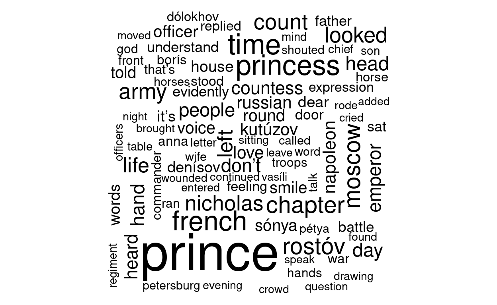
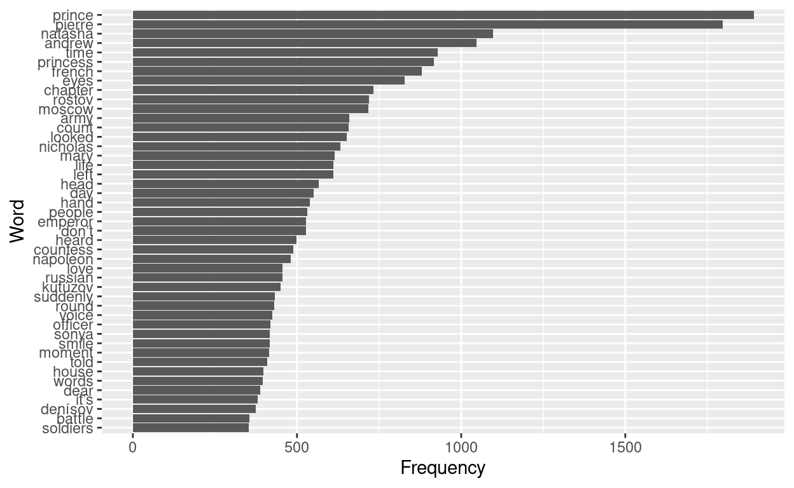

Or why I think bar charts are better
If you spend some time on the internet, you must have seen a wordcloud visualization somewhere. If you haven’t seen any of them this is how they look like.
In this post I will replicate a wordcloud for Tolstoi’s “War and Peace” and compare which insights can be gained comparing with a bar chart.
First, let’s download the text corpus from Gutenberg Project:
The next block will compute word frequencies and generate the wordcloud chart:

Granted, aesthetically wordclouds do not look bad. However, regarding insights, there are some items that are missing. For example, which word appears the most? “people” or “hand”? Ranking perspective is surely missing in these kind of charts. Also, words which are longer drag more attention to the reader than short words. These are the things that I find as the biggest disadvantages.
These issues can be solved with a barchart:

With a barchart we have a clearer view of the word frequencies. We get a sense of ranking and each word gets the attention it deserves regarding its frequency.